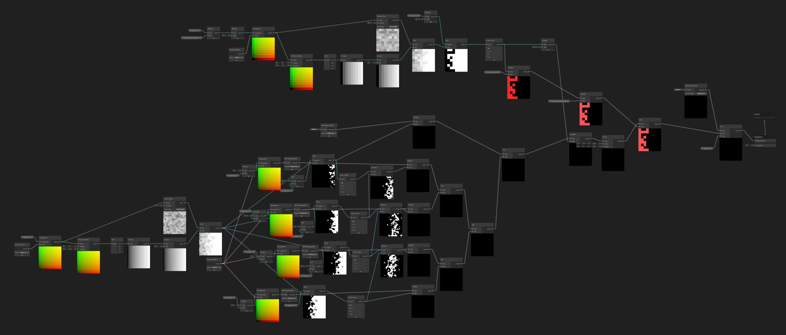
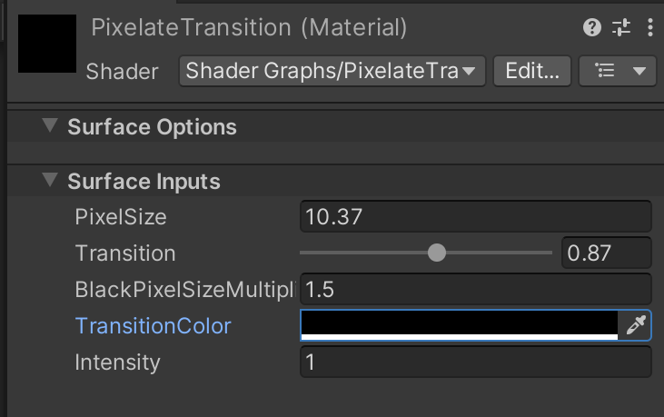
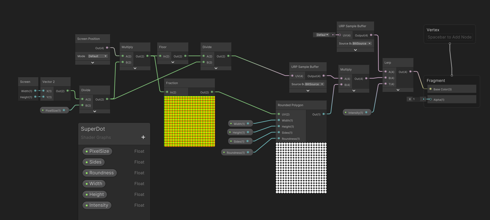
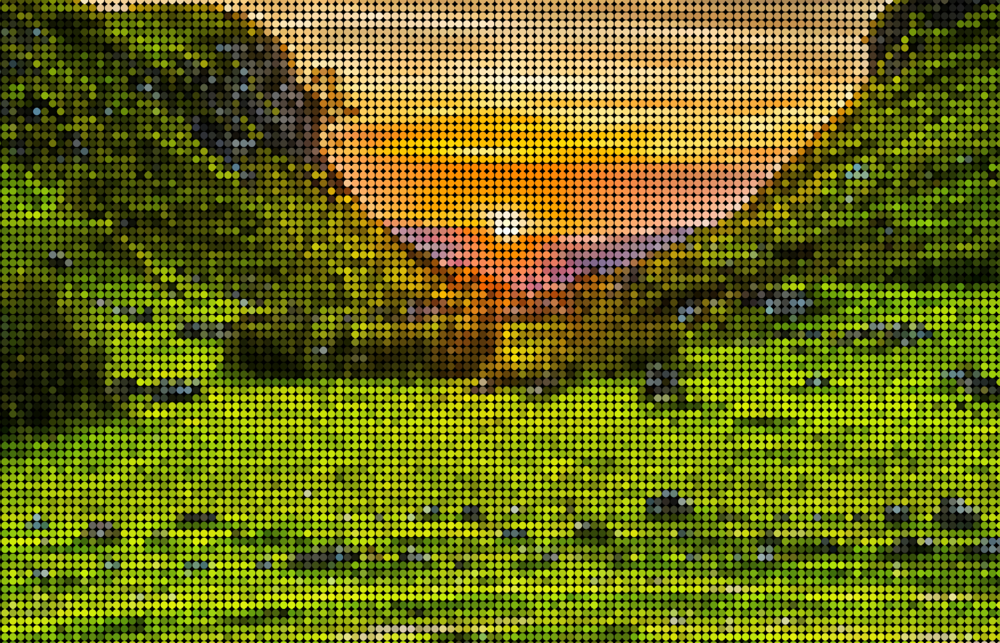
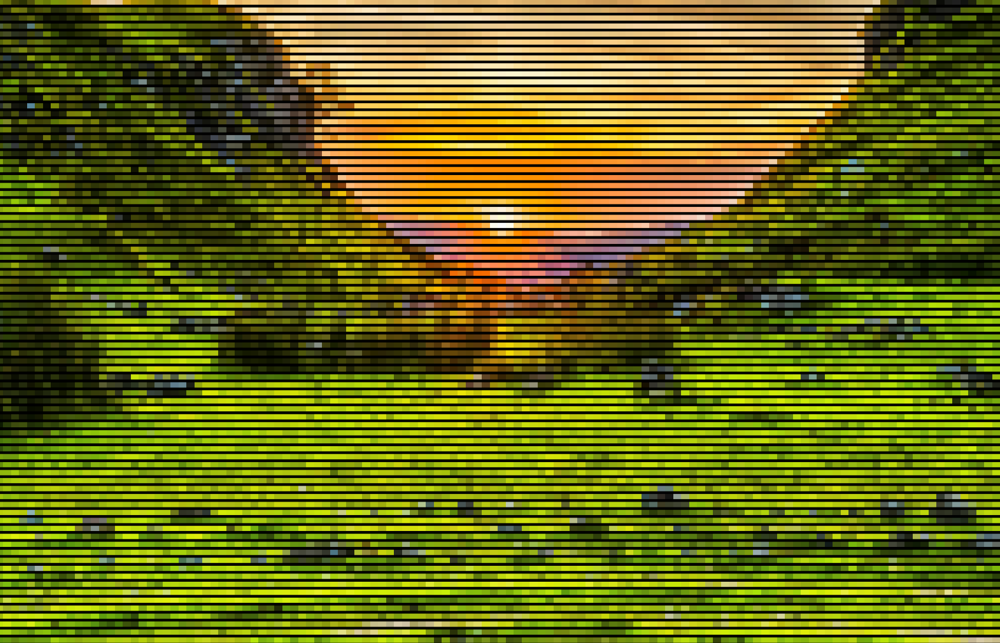
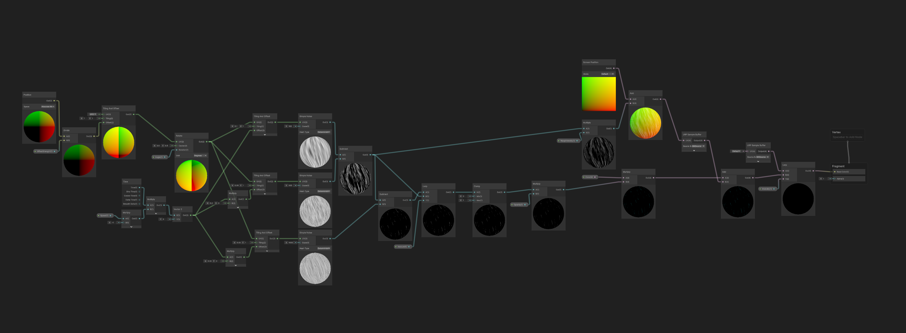
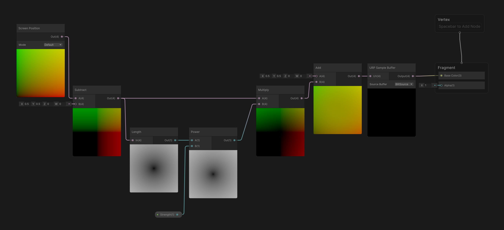
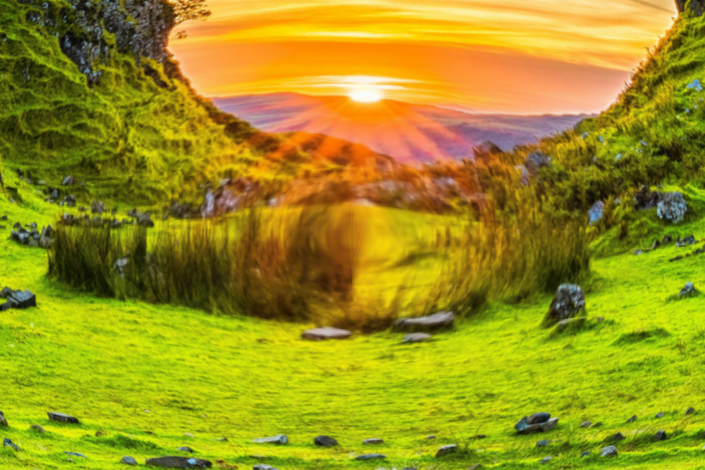

Custom Volume Overrides
Credits to Robert Lukeman for the image used in these examples!

Project Details
Though these are called Custom Volume Overrides, I will only talk about the shaders I made. This is because Maxym (classmate) made the system to convert the shader graphs to volume overrides.
Engine: Unity
Language: Shader Graph
Workflow: SCRUM (3 week sprint)
Work Time: 02-04-2024 - 02-07-2024
Team Size: 2
Pixel Transition
Every good game needs a fancy transition! So I thought about what kind of transition would be cool, and then the idea struck. What if the whole screen slowly pixelates and then goes to black?

This shader also has a lot of settings you can tweak, here is an example:

SuperDot
The idea came from early CRT like screens, showing each dot more pronounced rather then a clean screen. I made this effect mainly by using the Fraction, UV, and Rounded Polygon nodes in Shader Graph.


I actually LOVE this shader! Due to it using the Rounded Polygon and not a circle, you can customise it in loads of ways! Here is an example where the width is 10, and the polygon is square:

Rain
Because these shaders are made for a game (Project Starfall), it would be fitting to have some weather related shaders! So this was my attempts at a rain shader, made with mostly scrolling warped noise and adding / subtracting, then lerping that with the UV's to create a screen warp / rain particle effect!


Fisheye
For the fun of it, I also made a really easy fisheye effect! Though the graph is small, the process to get it there was not. I tried lots of things, but in the end it all worked out.

